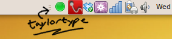
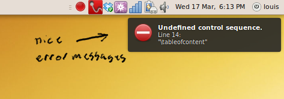

Whilst procrastinating on writing GCSE physics coursework, I thought it would be neat to have LaTeX run in the background and notify you when the document you're working on contains errors.
I wrote a python application which puts a small icon in the system tray. You can configure it to compile a LaTeX document.
It has a couple of settings for things like input file, output directory and automatic PDF opening (useful with evince, since opening refreshes the file if it is currently open in an existing evince window). It supports simple error messages for both LaTeX and BibTeX.
It uses GTK for the system tray icon, and libnotify to display the error message notifications.
The project is on launchpad here: https://launchpad.net/taylortype
There's a small site on sourceforge: http://taylortype.sourceforge.net/